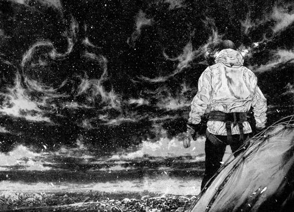
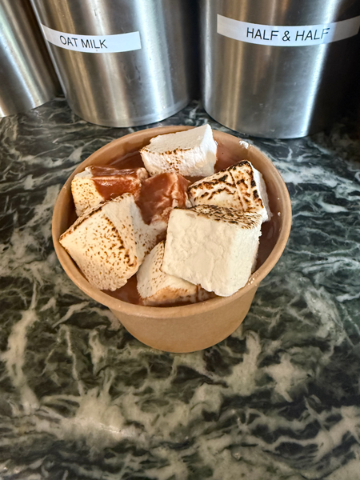

I love to climb, I am a huge fan of going with my friends or solo. It can be so fun to climb around and just be free like that. My best performance was when I flashed a V5. The V system is just a rating for how difficult a climb is, so a V0 is easiest. Flashing means that I did it on my first try. So, when I say that I flashed a V5, that means that I did a V5 on my first try!

I am a HUGE fan of the strokes, I went to their concert in NYC and it was so lit. All their albums are so good.
My ranking goes:
- Room On Fire: 10/10
- Is This It: 10/10
- The New Abnormal: 10/10
- Comedown Machine: light 9/10
- Reality Awaits: strong 8.5/10
- First Impressions of Earth: strong 7.5/10
- Angles: light 7/10

This is just a picture of a hot chocolate I got in NYC, it was so cool and I love sweets like that. Also a huge coffee drinker and I believe in mocha supremacy - as evidenced by my love of hot chocolate.